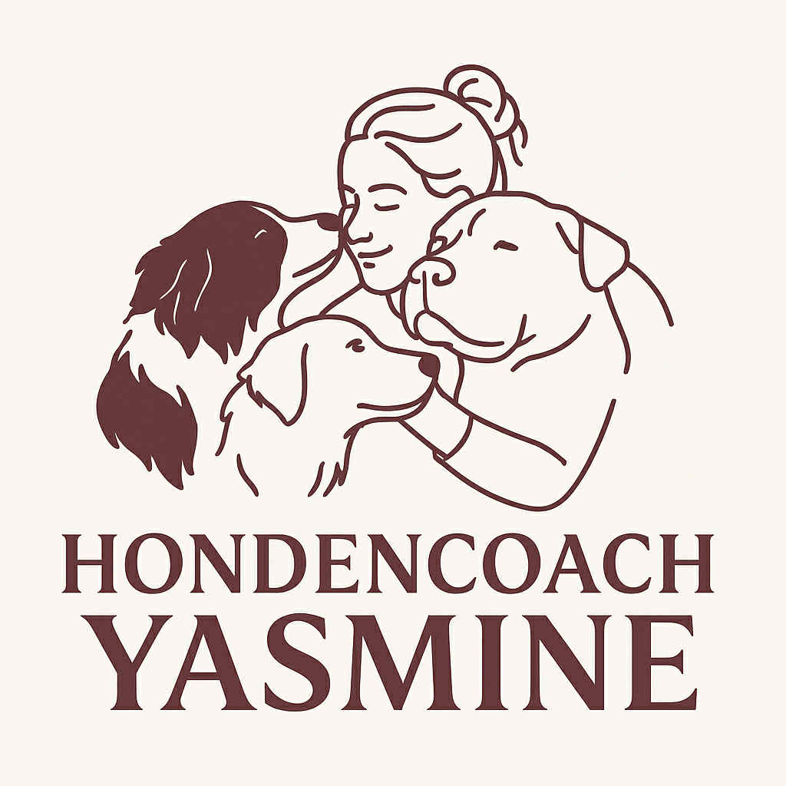

Puppy
Puppybegeleiding aan huis
Voor een fijne start samen. We bekijken bijten, zindelijkheid, alleen blijven, omgang met kinderen, wandelen aan de lijn en meer.

Hondencoach YasmineIk ben Yasmine Leyman, hondengedragstherapeut. Ik help jou je hond beter begrijpen, zodat probleemgedrag plaats maakt voor duidelijkheid en verbinding.
Tijdens een intake bekijken we rustig jullie situatie, de leefomgeving en de hulpvraag.
Hondengedrag is nooit zomaar “stout zijn”. Achter elk gedrag zit een reden. Samen zoeken we uit wat jouw hond nodig heeft om zich veilig en begrepen te voelen.
Ik ben Yasmine Leyman, hondengedragstherapeut en grote liefhebber van alles wat met hondentaal te maken heeft. Mijn passie begon toen ik merkte hoe misverstanden tussen hond en mens tot stress en frustratie aan beide kanten kunnen leiden.
Intussen volgde ik verschillende opleidingen en bijscholingen rond gedrag, lichaamstaal en welzijn van honden. In elk traject staat het welzijn van de hond centraal én kijken we ook naar wat haalbaar is voor jou als eigenaar.
Mijn aanpak is rustig, duidelijk en hondvriendelijk: zonder dwang, pijn of intimidatie. We bouwen stap voor stap aan nieuw gedrag, met respect voor het tempo van jouw hond.
Elk traject start met een intake. Aan de hand daarvan bekijken we welke begeleiding het best past bij jullie situatie.
Voor een fijne start samen. We bekijken bijten, zindelijkheid, alleen blijven, omgang met kinderen, wandelen aan de lijn en meer.
Voor honden die blaffen, uitvallen, angstig zijn, moeilijk alleen blijven of ander probleemgedrag tonen. We zoeken naar de oorzaak én een haalbare oplossing.
Wandelen zonder trekken, leren omgaan met prikkels en spanning buitenshuis. We oefenen in een rustige omgeving en bouwen geleidelijk op.
Voor algemene vragen over gedrag, voorbereiding op een pup of het overlopen van jouw huidige trainingsaanpak.
Namen en verhalen hieronder zijn voorbeelden. Je kunt hier later echte ervaringen van klanten met foto’s toevoegen.
“Onze hond Milo blafte naar alles en iedereen. Na het traject met Yasmine begrijpen we eindelijk waarom hij zo reageerde, en hebben we handvatten om hem te helpen. De wandelingen zijn nu zoveel rustiger.”
“De puppybegeleiding gaf ons veel meer vertrouwen. Yasmine legde rustig uit wat normaal puppengedrag is en hoe we grenzen kunnen aangeven zonder streng te zijn. Onze kinderen weten nu ook beter hoe ze met de pup moeten omgaan.”
Dit stuk gaat over puppy's en pubers en mijn begeleiding op maat hiervoor.
Ja. Zowel pups, pubers als volwassen honden zijn welkom, ongeacht het ras. Bij ernstige medische problemen werk ik altijd in overleg met een dierenarts.
Ik werk met een positieve, beloningsgerichte en welzijnsgerichte aanpak. Dat betekent dat we geen gebruik maken van hulpmiddelen die pijn, angst of intimidatie veroorzaken.
Tijdens de intake luister ik naar jullie verhaal, observeer ik het gedrag van de hond en stel ik gerichte vragen. Daarna overlopen we samen een plan van aanpak en krijg je concrete tips om meteen mee te starten.
Hier kun je later jouw werkgebied invullen (bijvoorbeeld: Gent en omgeving, of een bepaalde straal rondom jouw woonplaats).
Hieronder vind je richtprijzen. Na een korte kennismaking bekijken we samen wat het best past bij jullie.
Observatie + uitleg + eerste stappenplan.
Bijsturen, oefenen en verder opbouwen.
Voor algemene vragen of voorbereiding.
Vertel kort iets over jouw hond en jullie hulpvraag. Ik neem zo snel mogelijk contact met je op om samen te bekijken welke begeleiding past.
Praktijk hondengedragstherapie – Yasmine Leyman
(Adres en regio kun je hier later invullen)
E-mail: info@yasmineleyman.be
Telefoon: +324 99 15 76 41
Instagram: yasmineleyman